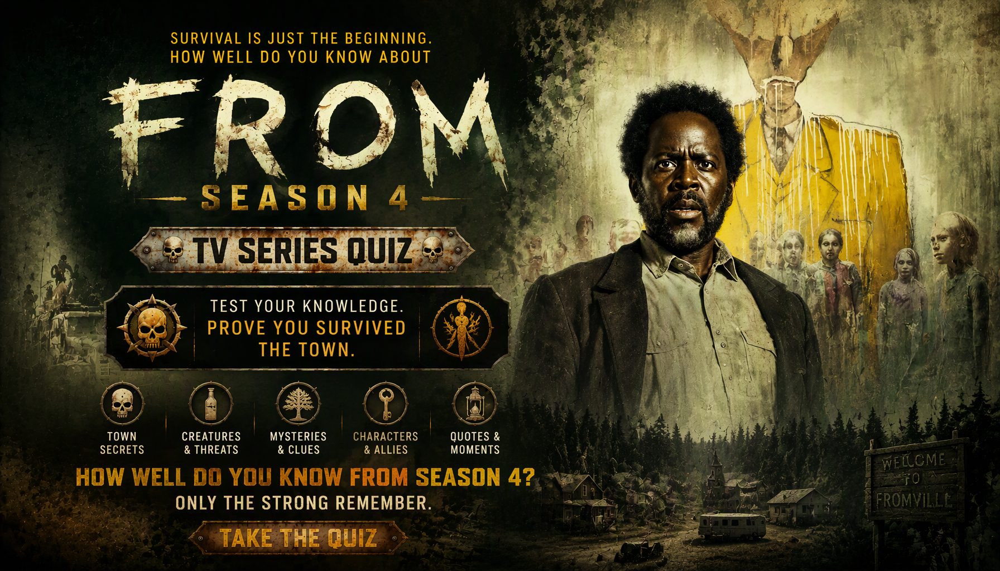

FROM • SEASON 4 • TV TRIVIA
FROM Season 4 Quiz
Think you know FROM Season 4? Test your knowledge of Boyd, Jade, Tabitha, Julie, the monsters, the Man in Yellow and the terrifying secrets of the town.
Every question has four possible answers, but only one is correct. Remember the strange discoveries, character revelations and shocking events of Season 4 to prove that you understand the mysteries of the town.
This quiz contains major plot details and spoilers from FROM Season 4.


ABOUT THE QUIZ
The FROM Season 4 Quiz is a 30-question trivia challenge about the characters, mysteries and events of the fourth season of the supernatural horror series.
Test your memory of Boyd Stevens, Jade Herrera, Tabitha Matthews, Julie Matthews, the town's creatures and the unsettling revelations surrounding the Man in Yellow.
FROM Season 4 Details
Series: FROM
Season: 4
Genre: Supernatural horror and mystery
Key Characters: Boyd Stevens, Jade Herrera, Tabitha Matthews, Julie Matthews, Victor and Fatima
Key Mysteries: The creatures, the Bottle Tree, the ghost children and the Man in Yellow
Story: The residents continue searching for answers while facing new threats and disturbing revelations about the town.
WHAT THIS QUIZ COVERS
The quiz tests your knowledge of character interactions, important events, mysterious objects, dialogue and revelations featured in the supplied question bank.
The Town and Its Creatures
Recall the creatures, Smiley's return, the human-sized dolls and the threats faced by the residents.
Boyd, Jade and Tabitha
Test your memory of Boyd's decisions, Jade's visions, Tabitha's discoveries and the mystery of the children's bones.
Julie, Ethan and Victor
Remember the characters' family connections, Julie's exploration of past events and the mystery surrounding Jim.
The Man in Yellow and Sophia
Review the questions about Sophia, Pastor Dunne, Elgin, the talismans and the final scene.
HOW THE QUIZ WORKS
The quiz contains 30 questions. Each question has four possible answers, with exactly one correct answer.
Every correct answer earns 1 point. Incorrect answers earn 0 points. Your final score is converted into a percentage out of 100%.
Your result reflects how well you remember the characters, mysteries and events covered by this FROM trivia challenge.
Quiz Navigation
Starting the quiz
Select START QUIZ on the opening screen to begin. The first question appears with four possible answers.
Selecting an answer
Select the option you believe is correct. Your choice is saved, and the quiz automatically advances to the next question shortly afterward.
Next and Back buttons
Use Next to move forward or Back to revisit a previous question. Your selected answers are saved as you move through the quiz, so you can review or change them.
Finishing the quiz
Answer all 30 questions. On the final question, submit your answers to view your score, percentage and FROM knowledge result.
Try Again and Challenge Friends
Select TRY AGAIN to replay the quiz. You can also use SHARE MY RESULT or CHALLENGE YOUR FRIENDS to share your result.
FAQ
How many questions are in the quiz?
There are 30 questions, each with four possible choices and one correct answer.
What is the maximum score?
The maximum score is 100%. Each correct answer contributes 1 point before the result is converted into a percentage.
What topics are covered?
The quiz covers the characters, creatures, strange objects, dialogue and mysteries featured in the question bank.
Can I take the quiz again?
Yes. Select TRY AGAIN after viewing your result to start another attempt.
Can I challenge my friends?
Yes. Use CHALLENGE YOUR FRIENDS after completing the quiz to share it with others.
Spoiler Warning
This quiz contains spoilers for FROM and includes character revelations, deaths and major mysteries.
Consider watching the relevant episodes before taking the quiz if you want to avoid spoilers.